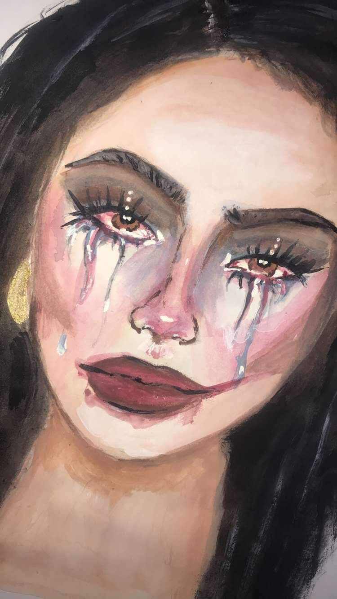

<!DOCTYPE HTML>
<!--
	Phantom by HTML5 UP
	html5up.net | @ajlkn
	Free for personal and commercial use under the CCA 3.0 license (html5up.net/license)
-->
<html>

<head>
	<title>Eccedentesiast/title>
	<meta charset="utf-8" />
	<meta name="viewport" content="width=device-width, initial-scale=1, user-scalable=no" />
	<link rel="stylesheet" href="assets/css/main.css" />
	<noscript>
		<link rel="stylesheet" href="assets/css/noscript.css" /></noscript>
</head>

<body class="is-preload">
	<!-- Wrapper -->
	<div id="wrapper">

		<!-- Header -->
		<header id="header">
			<div class="inner">

				<!-- Logo -->
				<a href="index.html" class="logo">
					<span class="symbol"></span><span class="title">Gabriela
						Vargas</span>
				</a>

				<!-- Nav -->
				<nav>
					<ul>
						<li><a href="#menu">Menu</a></li>
					</ul>
				</nav>

			</div>
		</header>

		<!-- Menu -->
		<nav id="menu">
			<h2>Menu</h2>
			<ul>
				<li><a href="index.html">Home</a></li>
				<li><a href="DMAWorks.html">DMA Works</a></li>
				<li><a href="PersonalWorks.html">Personal Works</a></li>
				<li><a href="AboutMe.html">About Me</a></li>

			</ul>
		</nav>

		<!-- Main -->
		<div id="main">
			<div class="inner">
				<a href="PersonalWorks.html">
					<h1>DMA</h1>
				</a>
				<span class="fit image ">
					
				</span>
				<p style="text-align:center;"> <b> Eccedentesiast </b>
					<br> <b> Acrylic Paint </b> </br>
					<b> 11x18 in </b> </br> </p>
				<p>

					<p> Eccendentiast [ex-cen-dent-tee-shee-ist]
					<br> noun. One who fakes a smile 
					<br>“An eccedentesiast is a person who hides their feelings behind a smile when all they feel
						is pain.”<br>
					</p>

				</p>

				<p> In connection with “After Every Storm, There’s Sunshine”, this was the first documented reaction to
					the feelings that I encountered on August 6, 2019. This date stands out for me due to something
					terribly unexpected occuring that caused me to rethink everything in my life. In this painting, I
					decided to paint myself in a disastrous manner with makeup smearing across my face and tears flowing
					down my cheeks. I was at my grandparents’ home when painting this. The smiles and the laughs I
					shared with them were all just an illusion to conceal my truest emotions: anger, sadness,
					anxiousness, fear and so much more.
					I feel like this painting is very relatable, yet haunting, something that I wanted to convey.
					I recall having to pretend like everything was alright and that’s what still hurts me to this day
					since I felt like I had to lie to everyone that cared about me.
				</p>
				<p> Being able to be open about emotions is very hard within the Latino community. We are raised to
					disguise our feelings and to move along with life because “it is what it is”. I see this piece as a
					cry for help, especially being in the state of mind as I was during this painting. I had no one to
					talk to, and for those who said they would be there for me, suddenly were no longer available. When
					situations happen like this, it’s not hard to decipher that all those things said from your parents
					or family members were probably right. Considering that all you have in this world is your dignity
					and your word.

				</p>
				<p> Being an eccendentialist was who I became over the years, without realizing it.
				</p>
			</div>
		</div>
	</div>

	<!-- Footer -->
	<footer id="footer">
		<div class="inner">
			<section>
				<h2> ༻ ♡ Follow ♡ ༺ </h2>
				<ul class="icons">
					<li><a href="https://twitter.com/PhantumPrincess" class="icon brands style2 fa-twitter"><span
								class="label">Twitter</span></a>
					</li>
					<li><a href="https://www.instagram.com/zayngonada/" class="icon brands style2 fa-instagram"><span
								class="label">Instagram</span></a>
					</li>
					<li><a href="https://www.linkedin.com/in/gabriela-vargas00/"
							class="icon brands style2 fa-linkedin"><span class="label">LinkedIn</span></a></li>
					</li>
					<li><a href="mailto:gabrieladraws93@gmail.com" class="icon solid style2 fa-envelope"><span
								class="label">Email</span></a></li>
				</ul>
			</section>
			<ul class="copyright">
				<li>&copy; Gabriela Vargas. All rights reserved</li>
				<li>Design: <a href="http://html5up.net">HTML5 UP</a></li>
			</ul>
		</div>
	</footer>

	</div>

	<!-- Scripts -->
	<script src="assets/js/jquery.min.js"></script>
	<script src="assets/js/browser.min.js"></script>
	<script src="assets/js/breakpoints.min.js"></script>
	<script src="assets/js/util.js"></script>
	<script src="assets/js/main.js"></script>

</body>

</html>